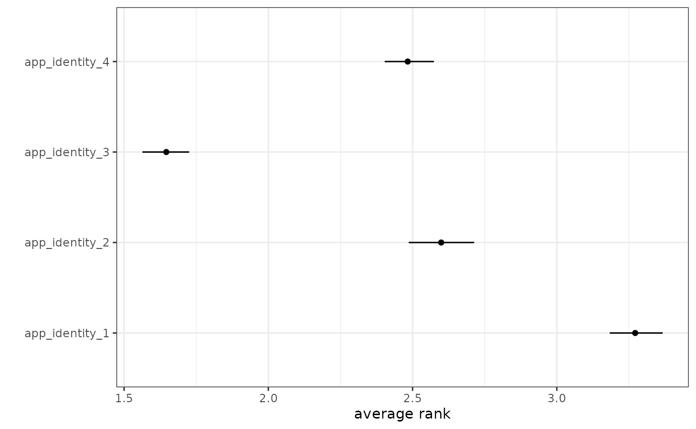

2. Correcting Bias in Ranking Data
Yuki Atsusaka and Seo-young Silvia Kim
Source:vignettes/2-bias-correction.Rmd
2-bias-correction.RmdDirect Bias Correction via imprr_direct
rankingQ has two primary functions to perform bias
correction. First, imprr_direct improves
ranking data by applying direct bias
correction to several classes of quantities of interest.
To apply the bias correction, we specify our dataset
(data), the number of items (J), the prefix of
column names that contain J items for the target ranking
questions, and the prefix of column names for the anchor ranking
questions. When survey weights are available, they can be included by
specifying weight in the function.
library(rankingQ)
library(dplyr)
library(ggplot2)
library(tidyr)
# Rename the items with a common prefix
identity <- identity %>%
rename(
app_identity_1 = app_party,
app_identity_2 = app_religion,
app_identity_3 = app_gender,
app_identity_4 = app_race
)
# Perform bias correction
out_direct <- imprr_direct(
data = identity,
J = 4,
main_q = "app_identity",
anc_correct = "anc_correct_identity"
)Results: Estimated Proportion of Random Responses
The first output of imprr_direct is the estimated
proportion of random responses. The vector est_p_random
returns the estimated proportion along with the lower and upper ends of
its corresponding 95% confidence interval.
# Estimated proportion of random responses with a 95% CI
out_direct$est_p_random## mean lower upper
## 1 0.3153146 0.2864261 0.3481958Results: Estimated Quantities of Interest
The other output is the bias-corrected estimates of four classes of ranking-based quantities, including
- average ranks
- pairwise ranking probabilities
- top-k ranking probabilities
- marginal ranking probabilities
The output tibble qoi stores the estimated quantities
and their corresponding 95% CIs.
# View the results based on the quantity of interest
out_direct$qoi %>%
filter(qoi == "average rank")## # A tibble: 4 × 6
## # Groups: item, qoi [4]
## item qoi outcome mean lower upper
## <chr> <chr> <chr> <dbl> <dbl> <dbl>
## 1 app_identity_1 average rank Avg: app_identity_1 3.27 3.18 3.37
## 2 app_identity_2 average rank Avg: app_identity_2 2.60 2.49 2.71
## 3 app_identity_3 average rank Avg: app_identity_3 1.65 1.56 1.73
## 4 app_identity_4 average rank Avg: app_identity_4 2.48 2.40 2.57## # A tibble: 0 × 6
## # Groups: item, qoi [0]
## # ℹ 6 variables: item <chr>, qoi <chr>, outcome <chr>, mean <dbl>, lower <dbl>,
## # upper <dbl>For example, one can visualize the result for average ranks as follows:
# Plot the result
out_direct$qoi %>%
filter(qoi == "average rank") %>%
ggplot(aes(x = mean, y = item)) +
geom_point() +
geom_linerange(aes(xmin = lower, xmax = upper)) +
theme_bw() +
xlab("average rank") +
ylab("")
Weighting-Based Bias Correction via imprr_weight
The alternative methods for bias correction is based on the idea of
inverse-probability weighting. imprr_weight
improves ranking data by computing
bias correction weights, which can be used to correct
for the bias in the inverse-probability weighting framework. The same
arguments previously used can be used as follows:
# Perform bias correction
out_weights <- imprr_weights(
data = identity,
J = 4,
main_q = "app_identity",
anc_correct = "anc_correct_identity"
)Results: Estimated Weights
The output of imprr_weights contains the set of weights
for all possible ranking profiles with J items. For
example, when J = 4, the set has
{1234, 1243, ..., 4321} and each profile now has an
estimated weight.
# View the estimated weights
out_weights$weights## ranking w
## 1 1234 0.0000000
## 2 1243 0.0000000
## 3 1324 0.0000000
## 4 1342 0.0000000
## 5 1423 1.0158812
## 6 1432 0.4078355
## 7 2134 0.8582397
## 8 2143 0.8070574
## 9 2314 0.7456387
## 10 2341 0.0000000
## 11 2413 1.1316994
## 12 2431 0.5767371
## 13 3124 1.0238295
## 14 3142 0.5400194
## 15 3214 0.8251218
## 16 3241 0.0000000
## 17 3412 1.2733020
## 18 3421 1.0314721
## 19 4123 1.2628998
## 20 4132 1.1045545
## 21 4213 1.0388263
## 22 4231 0.4999637
## 23 4312 1.2711103
## 24 4321 1.0593130Results: Estimated PMF with Raw Data and Bias Corrected Data
imprr_weight also returns the estimated probability mass
function of all ranking profile before and after bias correction.
# View the estimated PMF with raw data and weighted data
out_weights$corrected_pmf %>%
select(ranking, prop, prop_renormalized)## ranking prop prop_renormalized
## 1 1234 -0.0003526508 0.000000000
## 2 1243 -0.0044081345 0.000000000
## 3 1324 -0.0003526508 0.000000000
## 4 1342 -0.0098154461 0.000000000
## 5 1423 0.0483131539 0.046944603
## 6 1432 0.0077583167 0.007538549
## 7 2134 0.0293875632 0.028555111
## 8 2143 0.0253320795 0.024614506
## 9 2314 0.0212765957 0.020673901
## 10 2341 -0.0111672740 0.000000000
## 11 2413 0.0753497120 0.073215306
## 12 2431 0.0131656283 0.012792690
## 13 3124 0.0496649818 0.048258138
## 14 3142 0.0118138004 0.011479155
## 15 3214 0.0266839074 0.025928041
## 16 3241 -0.0030563066 0.000000000
## 17 3412 0.1659221817 0.161222159
## 18 3421 0.0510168097 0.049571673
## 19 4123 0.1537557306 0.149400343
## 20 4132 0.0672387446 0.065334095
## 21 4213 0.0523686376 0.050885208
## 22 4231 0.0104619725 0.010165620
## 23 4312 0.1632185259 0.158595089
## 24 4321 0.0564241213 0.054825814Merge Estimated Weights with Original Data
# Turn the results into a tibble
tibble_w <- out_weights$weights %>% tibble()
# Merge the weights back to the original data
identity_w <- identity %>%
unite(ranking, starts_with("app_identity"), sep = "", remove = FALSE) %>%
left_join(tibble_w, by = "ranking") %>%
select(w, everything()) %>%
rename(
party = app_identity_1,
religion = app_identity_2,
gender = app_identity_3,
race = app_identity_4
)
head(identity_w)## # A tibble: 6 × 12
## w ranking party religion gender race anc_house anc_neighborhood anc_city
## <dbl> <chr> <dbl> <dbl> <dbl> <dbl> <dbl> <dbl> <dbl>
## 1 1.02 1423 1 4 2 3 1 2 3
## 2 1.02 1423 1 4 2 3 1 2 3
## 3 1.27 3412 3 4 1 2 1 2 3
## 4 1.02 1423 1 4 2 3 1 2 3
## 5 1.10 4132 4 1 3 2 1 3 2
## 6 1.02 3124 3 1 2 4 1 2 3
## # ℹ 3 more variables: anc_state <dbl>, anc_correct_identity <dbl>,
## # s_weight <dbl>